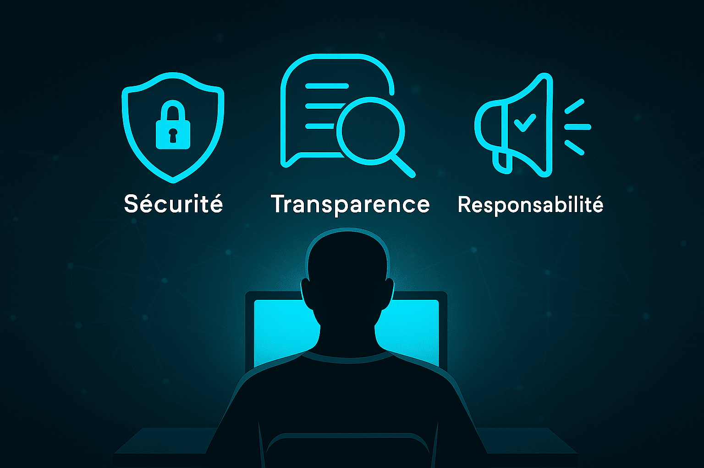
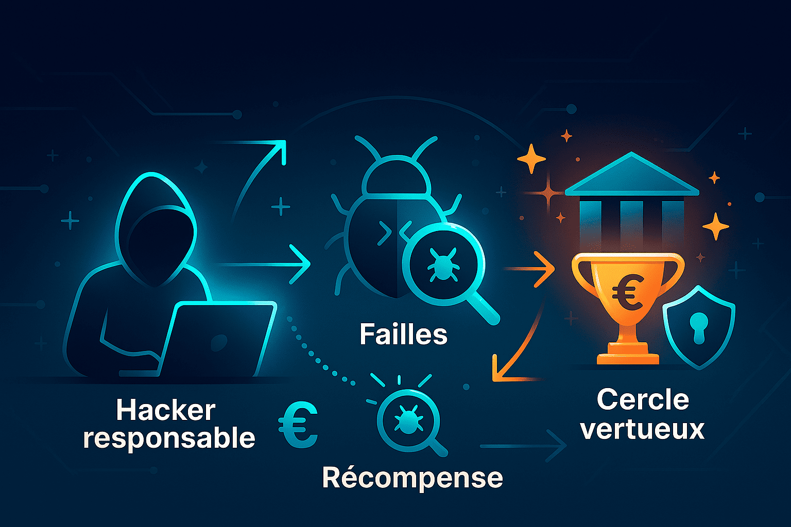

Éthique des hackers
Les hackers éthiques, ou "white hats", testent la sécurité des systèmes informatiques légalement et de manière responsable. Ils protègent utilisateurs et entreprises contre les cyberattaques. Leur engagement envers la sécurité et la confidentialité est essentiel.
Introduction

YesWeHack valorise les hackers responsables et leur contribution à la cybersécurité. Ils identifient les vulnérabilités avant que des hackers malveillants ne puissent les exploiter. Le hacking éthique repose sur la responsabilité, le respect des données, la transparence et une démarche constructive. Les hackers collaborent avec les entreprises pour sécuriser les systèmes et protéger les utilisateurs.
Principes fondamentaux
L’éthique des hackers est guidée par des valeurs fortes : agir de manière responsable et contribuer à la sécurité informatique.
- Respect des utilisateurs : ne jamais exploiter ou divulguer des données personnelles.
- Transparence : informer clairement les entreprises des vulnérabilités.
- Divulgation responsable : signaler les failles de façon sécurisée et constructive.
Une éthique bénéfique
Le programme Bug Bounty de YesWeHack montre qu’un hacker responsable peut avoir un impact économique positif. Les chercheurs identifient les failles et sont rémunérés, valorisant ainsi leurs compétences et encourageant la cybersécurité. Les entreprises renforcent leur sécurité, tandis que les hackers éthiques sont reconnus pour leurs efforts. Ce modèle crée un cercle vertueux entre éthique et économie.
Cas pratique

Depuis 2015, YesWeHack a collaboré avec des milliers de chercheurs en Europe. La plateforme est un leader en cybersécurité, plaçant toujours l’éthique au centre de sa démarche.
"L’éthique est la clé pour transformer le hacking en solution de cybersécurité."